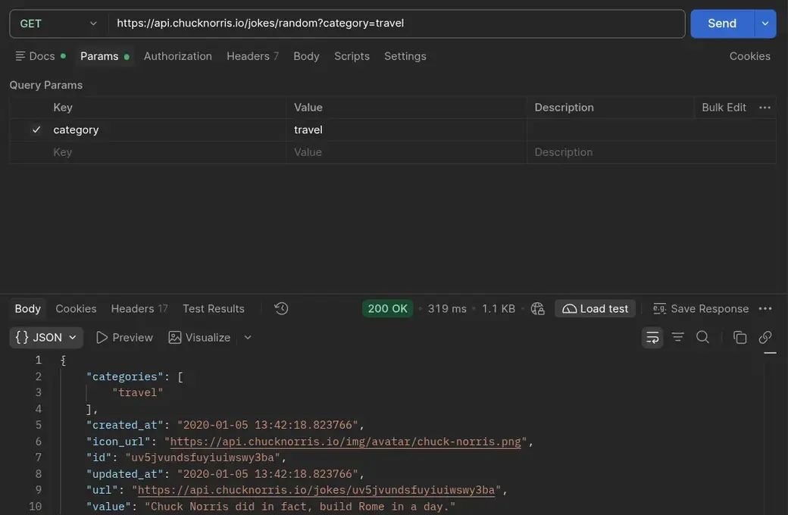

Математика
Статистика, линейная алгебра и вероятности как основа моделей.
Сайт-визитка · 2026
Я учусь на первом курсе по программе «Прикладной искусственный интеллект и наука о данных». Здесь коротко о том, как я понимаю свою программу, почему она стала моим выбором, что я уже умею и куда хочу двигаться дальше.
Как я понимаю программу
Для меня цель программы — научить специалиста, который понимает всю цепочку: где взять данные, как их очистить и проанализировать, какую модель выбрать и как встроить результат в работающую систему. Поэтому в ней рядом стоят математика, программирование, базы данных и прикладные задачи.
Программа открывает несколько дорог: анализ данных для бизнеса, машинное обучение, разработку сервисов с элементами ИИ. Самым перспективным мне кажется именно прикладная часть — когда модель решает конкретную задачу, а не остаётся экспериментом в блокноте.
Статистика, линейная алгебра и вероятности как основа моделей.
Сбор, очистка, хранение и визуализация данных.
Машинное обучение и оценка качества моделей.
Сервисы, API и интеграция моделей в продукты.
Почему именно эта программа
Мне всегда было интересно, как сервисы подбирают рекомендации, распознают текст и речь или прогнозируют спрос. За этим стоит работа с данными и программирование, и мне хотелось разобраться в этом изнутри, а не только пользоваться готовыми инструментами. Ещё один довод — перспективы: специалисты по данным нужны почти в любой отрасли, от медицины до транспорта.
Профессиональные планы
В ближайшие годы хочу уверенно освоить Python, SQL и основные библиотеки для анализа данных, сделать несколько собственных проектов и попасть на стажировку. В перспективе вижу себя инженером машинного обучения: хочу решать задачи, где модель помогает людям принимать решения быстрее и точнее, — например, прогнозирование или автоматическая обработка документов.
Интересы и навыки в IT
Учебные работы

01 / API
Семь запросов: позитивные сценарии, обработка ошибки и ответы в формате JSON.
GET · JSON · 200/404
02 / Docker
Запуск контейнера и проверка публикации локального порта.
Docker · localhost
03 / Данные
Расчёты по формулам и визуализация данных в электронной таблице.
Calc · диаграммыДостижения и мероприятия
Публикаций, побед в олимпиадах и хакатонах у меня пока нет. Главный результат на сегодня — учебные проекты, показанные выше. Дальше хочу постепенно разбираться в анализе данных и, возможно, со временем попробовать себя в профильных мероприятиях.
Контакты
Напишите через форму или по контактам ниже. Перед отправкой форма проверяет, что в адресе электронной почты есть символ @.
Открыть сайт по QR-коду
kalizeip.github.io/ocg-project-7